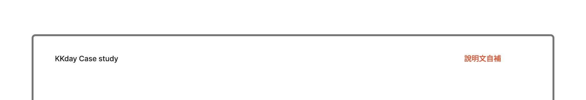
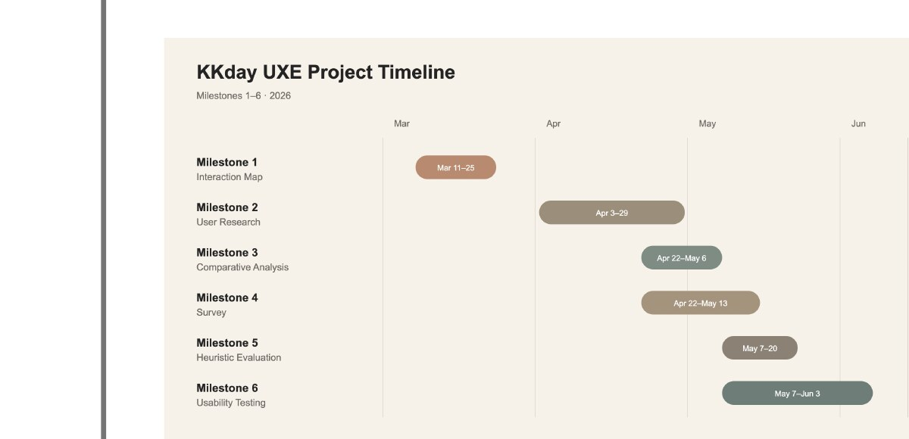
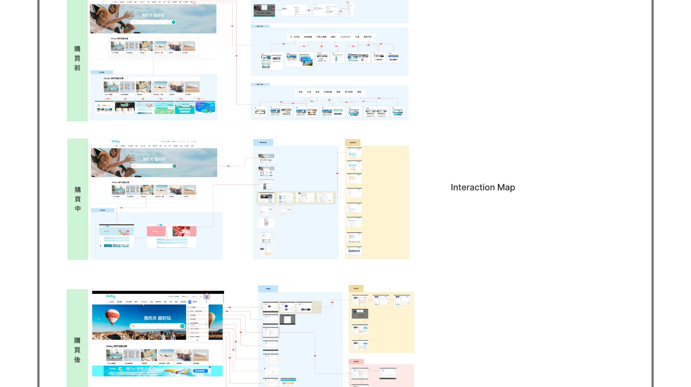
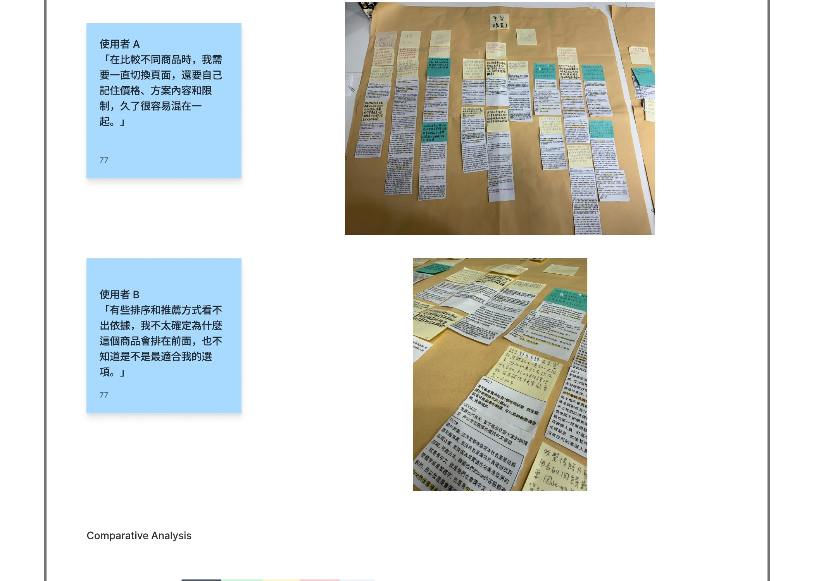
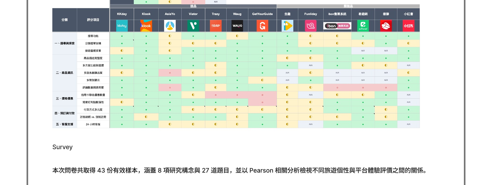
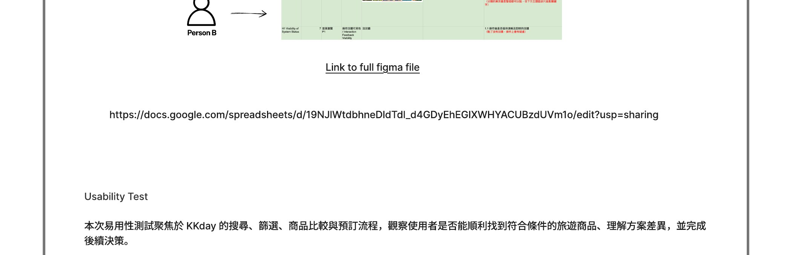
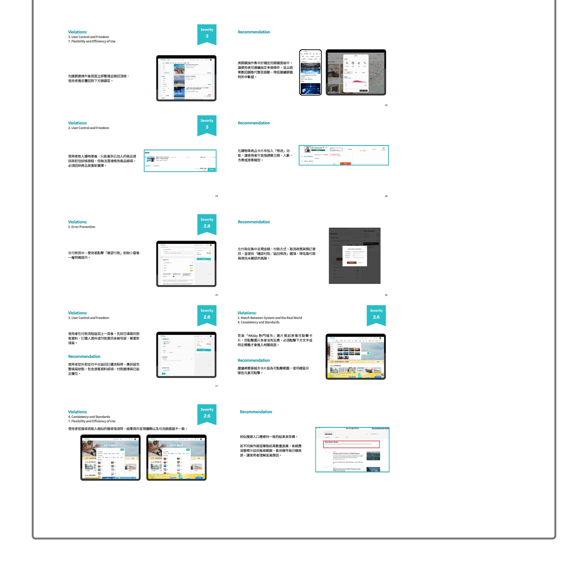

研究概覽
針對 KKday（旅遊體驗電商平台）進行完整的介面 UX 研究，分析使用者在搜尋、比較與預訂旅遊體驗時遭遇的問題，整合多種質性與量化方法，提出具體設計改善建議。
User Interviews · Case Walk-through · Competitive Analysis · Survey · Heuristic Evaluation · Usability Testing

研究方法與時程
研究分為「脈絡分析」「競品評估」「使用者測試」三個階段，依序推進。第一階段透過使用者訪談與 Case Walk-through 建立行為脈絡；第二階段進行競品比較與問卷調查；第三階段透過 Heuristic Evaluation 與 Usability Testing 驗證問題並收集改善依據。

研究流程
招募具旅遊預訂經驗的使用者進行深度訪談，搭配 Case Walk-through 觀察實際操作流程。透過 Affinity Diagram 歸納訪談資料，識別資訊呈現不一致、信任感不足、比較流程繁瑣等核心痛點。

使用者研究
訪談記錄呈現使用者在預訂過程中的真實痛點——價格透明度不足、評價可信度難以判斷、行動版操作不順是三個最高頻問題。

競品分析
系統性比較 KKday 與多個旅遊體驗平台在資訊架構、產品呈現、價格透明度與評價整合等維度的差異，建立評估矩陣，識別 KKday 在各功能面向的相對優劣與改善機會。
問卷調查
設計結構化問卷，涵蓋使用者背景、預訂行為、平台功能滿意度與資訊信任度，並以 Pearson 相關係數分析不同使用者特徵對平台體驗評分的影響程度。

啟發式評估
依據 Nielsen 10 項啟發式原則，逐一評估 KKday 搜尋結果頁、產品詳情頁、預訂流程與付款頁面，標記問題位置與嚴重性等級（0–4 分），整理超過 30 項介面問題，為後續 Usability Testing 提供問題假設。
易用性測試
邀請 8 位符合目標族群的受測者執行 5 項核心任務，包含搜尋體驗活動、比較多個產品、閱讀評價、完成預訂與處理付款。觀察並記錄操作路徑、停頓位置與口語回饋，量化各任務完成率與所需時間。
研究問題：使用者如何在 KKday 完成旅遊體驗的搜尋與預訂？哪些介面元素造成決策阻礙？

核心發現與改善建議
綜合所有研究方法的發現，整理影響使用者體驗的關鍵問題與對應改善方向：